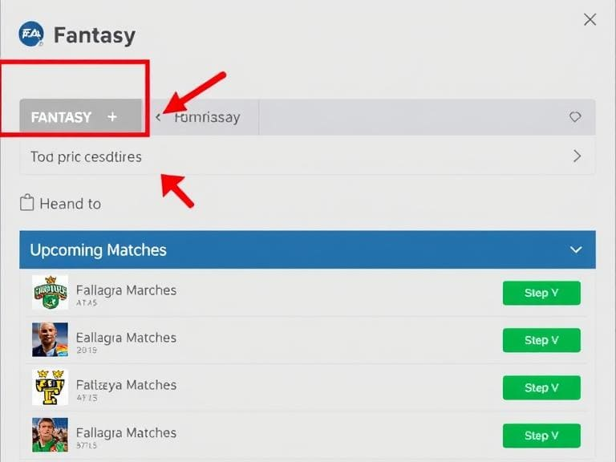
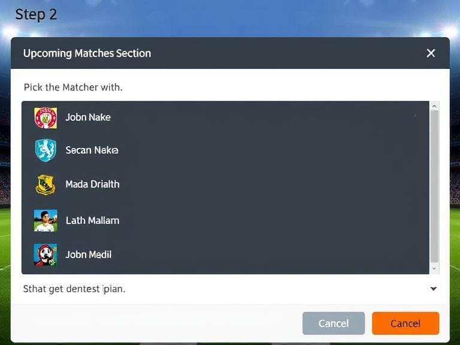
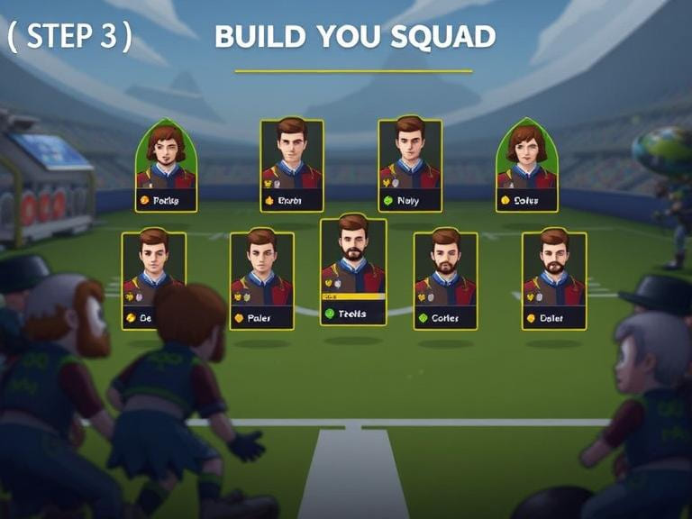
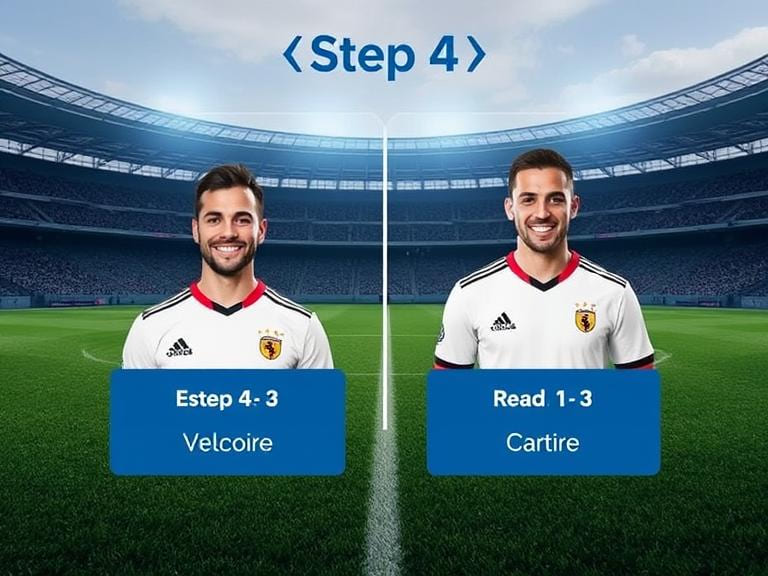
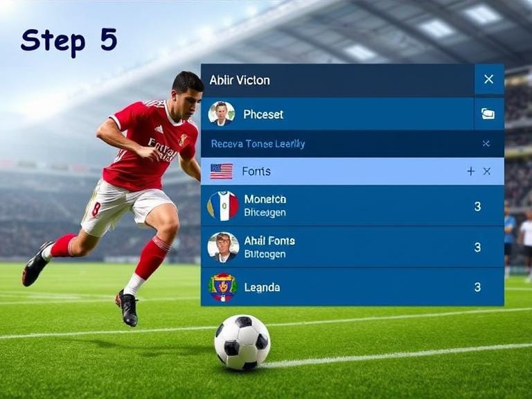
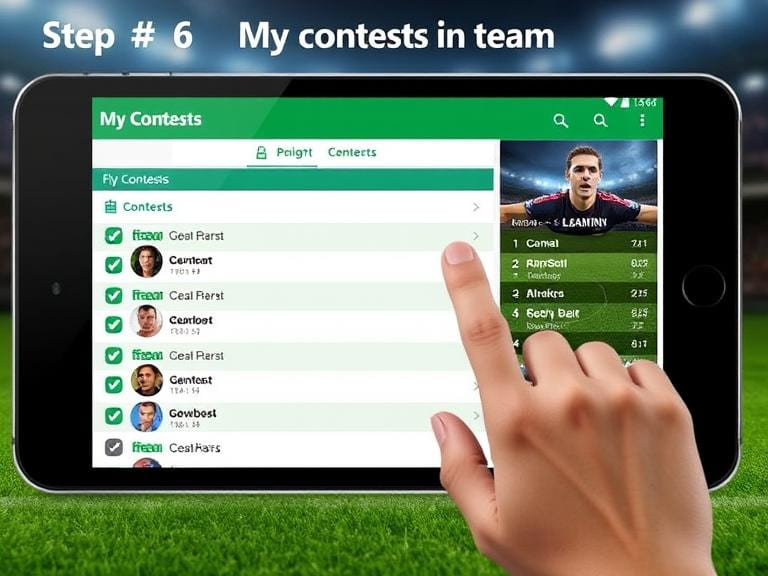
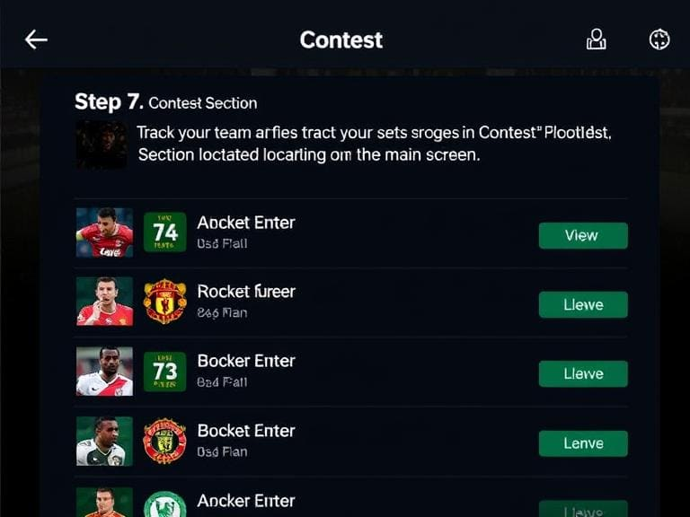

Cricket is a sport that involves a bat and a ball, played between two teams of 11 players each.
The game takes place on a circular or oval field, featuring a 22-yard long pitch at its center.
Aim of the Game
The main goal is to outscore the opposing team in runs. Each team alternates between batting and bowling,
with one aiming to accumulate runs and the other attempting to limit runs and dismiss batters.
Essential Rules
Innings: Matches may occur in various formats, typically:
Test: Each side bats twice over a period of five days.
One Day International (ODI): Each team bats once for a total of 50 overs.
Twenty20 (T20): Each team bats once for 20 overs.
Overs: An over consists of six legal deliveries bowled by the bowler.
Runs: Runs can be scored in multiple manners:
By completing a run between the wickets.
By hitting the ball to the boundary (4 runs if it bounces before crossing the boundary,
6 runs if it crosses without touching the ground).
Wickets: A batter can be dismissed in several ways, such as:
Bowled (the ball hits the stumps).
Caught (a fielder catches the ball hit by the batter before it touches the ground).
LBW (leg before wicket; when the batter is out because the ball strikes their leg in line with the stumps).
Run-out (when a fielder strikes the stumps with the ball before the batter reaches the crease).
Fielding and Bowling: Each team has bowlers who bowl to the batters of the other team,
and positions may rotate among teammates.
Umpires: Umpires supervise matches, make dismissal decisions, and ensure compliance with the rules.
Appeals: The bowling team must appeal to the umpires regarding a potential dismissal.
Integration in "VictoryBet Blitz"
Game Modes: Offer a variety of game modes that reflect formats such as Test, ODI, and T20,
enabling players to choose their preferred style.
Customization: Permit players to customize their team and players with personalized statistics
based on actual player performances.
Scoring System: Establish scoring metrics based on boundary hits and running between wickets,
including real-time animations.
Challenges: Feature dynamic challenges (e.g., LBW appeals) that players can opt to accept or
review using a limited number of 'reviews’, akin to real cricket.
Introduction
Football, known as soccer in some regions, is contested between two squads of 11 players each.
The game is played on a rectangular pitch, featuring a goal at each end.
Aim of the Game
The objective in football is to score more goals than the rival team. Players primarily utilize their
feet but can make contact with any body part except their hands and arms (the goalkeeper may use their hands).
Essential Rules
Match Duration: A standard football match consists of two halves, each lasting 45 minutes,
with additional stoppage time if necessary.
Scoring: A goal is counted when the entire ball crosses the goal line between the goalposts
and beneath the crossbar.
Offside Rule: A player is considered offside if they are closer to the opposing goal line
than both the ball and the second-last opponent at the moment when the ball is played to them,
unless they are in their own half.
Fouls and Set Pieces: Fouls result from illegal actions like tripping or pushing. Depending on
the severity and location of fouls, free kicks or penalty kicks are awarded.
Direct Free Kick: Can be taken directly to attempt a goal.
Indirect Free Kick: Requires another player to touch the ball before scoring.
Penalty Kick: A direct free kick taken from 12 yards when a foul occurs in the penalty area.
Yellow and Red Cards: Referees may issue yellow cards for warnings and red cards for serious
offenses, leading to player exclusion.
Substitutions: Teams can replace players during matches, typically allowing up to three
substitutions, although this may vary by competition.
Corner and Goal Kicks: Awarded when the ball exits play off a defender (corner) or an attacker
(goal kick).
Integration in "VictoryBet Blitz"
Control Mechanics: Implement touch controls for dribbling, passing, and shooting, creating
a nuanced gameplay experience that reflects real football.
Match Formats: Facilitate quick matches, tournaments, or league formats.
Player Improvement: Allow features for players to enhance their skills similar to real-life
player progression.
Strategic Decisions: Incorporate in-game decisions that replicate real match scenarios,
such as selection of formations or strategic adjustments based on play style.
Introduction
Kabaddi is a traditional Indian sport merging elements of wrestling and tag, involving two teams
with seven players each.
Aim of the Game
The goal is to score points by tagging opponents while holding your breath and returning to your half
of the field.
Essential Rules
Court Dimensions: The game takes place on a rectangular court divided into two parts.
Raid System: Players take turns raiding; one player from the attacking team (the raider)
seeks to touch opponents and safely return to their side without getting tackled.
Scoring:
Points are awarded for successfully tagging opponents during a raid.
Additional points may be gained for every opponent touched.
Points can also be acquired for effectively defending against a raider's attempt.
Defensive Strategies: The defending team works to prevent the raider from returning to their half
by tackling them.
Raid Time Limit: Each raid lasts for 30 seconds. If the raider fails to score in this time,
a point goes to the defending team.
Substitution Policy: There are limits on player substitutions permitted during matches.
Integration in "VictoryBet Blitz"
Rapid Gameplay: Develop a fast-paced environment with quick actions and decisions for
tagging opponents, increasing excitement.
Team Tactics: Enable players to devise strategies, such as selecting between a defensive
approach or an aggressive raiding tactic.
Time Regulation: Implement countdown timers for raids and defensive actions to emphasize urgency.
Instant Feedback: Offer animated feedback for successful touches or tackles, replicating
the intensity of professional kabaddi competitions.

Step 1 (Main Screen):
Click on the "Fantasy" tab. Then, head to the 'Upcoming
Matches' area.

Step 2 (Upcoming Matches Area):
Select the match you'd like to engage in.

Step 3 (Build Your Squad):
Assemble your team. Ensure all roles are filled with the
available players.

Step 4 (Choose Captain & Vice-Captain):
After setting up your team, appoint a captain (2x points)
and a vice-captain (1.5x points) for your lineup.

Step 5 (Enter the Contest):
Once your team is finalized, you can join contests that fit
your preferences.
For practice contests, you can join for free to assess your
skills. If you’re confident in your knowledge, you may want
to enter paid contests with nominal entry fees for a chance
to win actual cash.

Step 6 (My Contest Area):
After entering a contest, you can check or adjust your teams
in the "My Contests" area.

Step 7 (Contest Section):
Track your team's progress in the “Contest” section located
on the main screen.